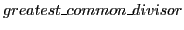
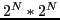
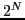

Next: Contributions Up: Model checking of multicore Previous: Formal notations Contents Index
The complexity of hardware and software is increasing as the years are passing. With increase in complexity, the likelihood of errors is much greater. A major goal of software engineering is to enable developers to implement systems which operate reliably despite the complexity. One of the ways to achieve this is by using formal methods [12]. Formal methods are mathematically based techniques, tools and languages for describing and verifying the system. These techniques can greatly increase our understanding of a system by revealing incompleteness, ambiguities and inconsistencies that may go undetected otherwise [20].
Single core processor's speed is limited by the physics of semiconductors. High performance computers are being designed using multiple cores to reach the high computation goals. In multicore systems, applications are designed to execute in parallel, and computation speed is achieved by parallel computation. The parallel computation increases complexity of software and hardware. Research industry is working on developing tools and techniques to reduce complexity and detect possible error cases. In this work we have analysed an embedded multicore Digital Signal Processor (DSP) architecture and software and developed model checking techniques. DSPs are processors with special functional blocks to handle digital signals. A digital signal is a sequence of discrete values which represent a physical signal, for example, representing a radio signal or audio signal. Digital signal processing can be enhanced by features like fixed point arithmetic, coprocessors and dedicated registers. The standard C language does not have explicit support to handle these features. Industry and researchers have defined extensions like Embedded-C and DSP-C to add these features to standard C. We have added support for DSP-C in our bounded model checking tool to process DSP-C based programs. We will present multicore, parallel processing, DSP functionality and DSP-C in later chapters.
Model checking is a formal method for verifying logical correctness. Proving logical correctness can be very effective in development process since testing lacks the coverage [45], peer review is error prone and costly. For example as we can see in fig:example:test:coverage:code, the function  can iterate in while loop based on the values of x and y, which are dynamic values. There are  possible inputs and  outputs, where N is number of bits in int data type. In large software it is impractical to cover all the inputs, outputs and behaviours of each function and module. There are alternative approaches in testing, like code coverage techniques and white-box testing, which can provide some assurance of behaviour but testing cannot prove the correctness.
The verification techniques are being employed extensively in hardware and embedded system development. Since, hardware and embedded systems are designed, developed once and mass produced, and bugs in implementation may not be fixed once produced. Even a single bug in the system may lead to recall of all the products. Also, the embedded systems have become part of our regular life. For example, microwave oven at home to safety critical systems like power plant controller or flight controllers in aircraft. A single bug in these systems can lead to fatal disasters. The verification techniques can help us to identify possible error cases. In embedded systems, verification can identify problems like checking if array access is within the defined array bound, dangling pointers, arithmetic overflow or underflow and if it is a multicore systems, data races, deadlocks and many other properties can be verified [44,34,41].
Model checking statically analyses the implementation and asserts on the properties of the logic. fig:model:checking shows the block diagram of model checking. A model checker reads program or circuit logic, converts it into a formula and compares it with the specification. Model checker matches the logic and the specification, and tells the implementation is incorrect if the logic differs from specification. Model checking is used to detect undesired behaviours of the system.
Software model checking is complex since it operates based on information available statically, without running the programs and programs contain code segments controlled by dynamic conditions [18]. Software model checking also has to cope up with loops which are bounded with run-time conditions, for instance, while loop in function (fig:example:test:coverage:code) is bounded by values of x and y. The dynamically bounded programs can be verified using Bounded Model Checking (BMC), which considers a static bound on loops [3].
CBMC is a Bounded Model Checking tool which can process C and C++ programs and verify different properties [27,10,11]. It converts the programs into intermediate forms which are called goto-programs. The goto-programs are simplified C and C++ programs, represented in the form of Control Flow Graphs (CFG). In goto-programs, the variables are renamed so that each variable is assigned only once, the transformation is called Static Single Assignment (SSA) [11]. CBMC also supports pointers, arrays, structures, floating point operations and function pointers. CBMC handles loops by bounding the number of iterations each loop can be executed and unrolling each loop according to the bound. We will present CBMC with more details in later chapters.